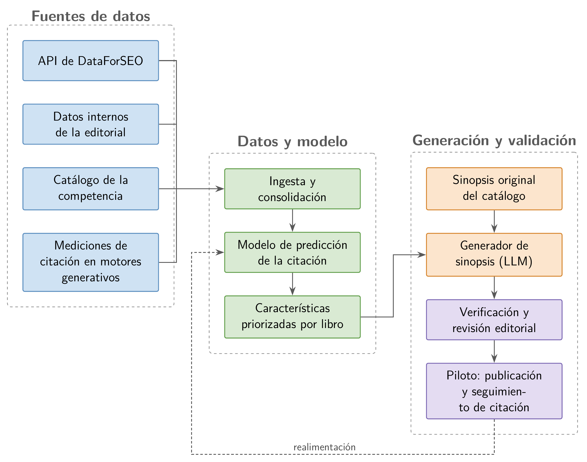

Contexto y propuesta
La optimización para motores de búsqueda (SEO, por su sigla en inglés) mejora la posición de un sitio en la página de resultados de los buscadores tradicionales. Sin embargo, cada vez más consultas se resuelven en motores de búsqueda generativa, que redactan una respuesta y citan un conjunto acotado de fuentes.
La optimización para motores de búsqueda generativa (GEO, por su sigla en inglés) busca que un contenido aparezca entre esas fuentes. En este proyecto, el éxito se mide como citación: la inclusión de la ficha del libro entre las fuentes de la respuesta.
Las herramientas comerciales de SEO no anticipan qué títulos serán citados ni qué conviene modificar en sus sinopsis. La solución propuesta traslada el foco hacia la citación en dos etapas.
- Un modelo estima la probabilidad de citación de cada título y ordena las características de contenido según su aporte.
- Un generador basado en un modelo grande de lenguaje (LLM, por su sigla en inglés) reescribe la sinopsis e incorpora esas características.
La figura 1 muestra el flujo completo, desde las fuentes de datos hasta el piloto controlado, cuyas mediciones realimentan el modelo.

Interesados
El equipo de Analítica Avanzada de Penguin Random House Grupo Editorial desarrolla el proyecto en forma interna. La tabla 1 resume el rol de cada interesado.
| Rol | Nombre | Organización | Aporte |
|---|---|---|---|
| Auspiciante | – | Penguin Random House | Horas de trabajo, datos internos y crédito de la API de DataForSEO. |
| Cliente | Victoria O'Donnell | Penguin Random House | Valida los entregables y define los títulos del piloto. |
| Responsable | Ing. Luis José Paredes Ramirez | Penguin Random House | Desarrolla el proyecto como machine learning engineer. |
| Director | Dr. Ing. Juan Manuel Rodríguez | Universidad de Buenos Aires | Encuadre metodológico y supervisión académica. |
| Codirector | Sebastian Pellizzeri | Penguin Random House | Conocimiento del negocio editorial y fijación de prioridades internas. |
Propósito
Aumentar la visibilidad del catálogo en los motores de búsqueda generativa, medida como la tasa de citación de sus fichas, sin resignar el posicionamiento orgánico ya consolidado.
Alcance
Incluye
- El conjunto de datos de citación, con mediciones repetidas en ChatGPT y en AI Overviews.
- La extracción de características de contenido con un LLM y su validación manual.
- El modelo de predicción de la probabilidad de citación.
- El generador de sinopsis con restricciones de extensión, tono y fidelidad.
- La verificación automática de las sinopsis candidatas.
- Un piloto controlado con un grupo experimental y un grupo de control.
- La documentación, el código fuente y la memoria del trabajo final.
No incluye
- Otros factores de GEO distintos de la sinopsis.
- Las respuestas que los motores generan sin búsqueda web.
- El entrenamiento o el alojamiento de un modelo de lenguaje propio.
- La integración con el gestor de contenidos de la tienda en línea.
- El despliegue sobre todo el catálogo y la puesta en producción.
- La medición del impacto en ventas o en ingresos.
- Otros mercados distintos de Argentina.
Requerimientos
El product backlog agrupa ocho historias de usuario (HU) en cuatro épicas. Cada historia se pondera en story points según su dificultad, su complejidad y su incertidumbre.
Cronograma
Las 600 h se distribuyen en once sprints de desarrollo, precedidos por uno de planificación. La etapa técnica cierra dos meses antes de la defensa. La figura 2 presenta el diagrama de Gantt con la fecha de hoy marcada en color.
Figura 2. Diagrama de Gantt de los sprints.
Gestión de riesgos
Cada riesgo se evalúa según su severidad (S) y su probabilidad de ocurrencia (O), en una escala de 1 a 10. El número de prioridad de riesgo (RPN, por su sigla en inglés) es el producto S × O. Se mitigan los riesgos con un RPN mayor que 25. La figura 3 compara el RPN original, en color claro, con el residual tras la mitigación.
Figura 3. RPN de cada riesgo antes y después de la mitigación. La línea vertical marca el umbral de 25.
Gestión de la calidad
El desarrollo sigue la metodología CRISP-DM dentro de un marco Scrum. Cada historia de usuario tiene criterios de aceptación medibles, que se verifican en la revisión de cada sprint.
Métricas de éxito del negocio
- Aumento relativo de la tasa de citación del grupo experimental de al menos 20 %, con significación estadística.
- Ninguna caída de la posición orgánica respecto del grupo de control.
- Al menos 70 % de sinopsis candidatas aprobadas en la revisión editorial.
Controles técnicos
- Validación cruzada agrupada por título, sin fuga de información.
- Error cuadrático medio ponderado y correlación de Spearman frente a un modelo de referencia.
- Umbral de fidelidad semántica para cada sinopsis candidata.
- Revisión editorial obligatoria antes de publicar.